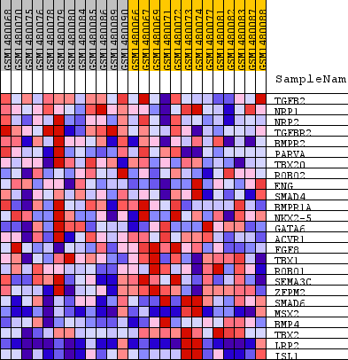
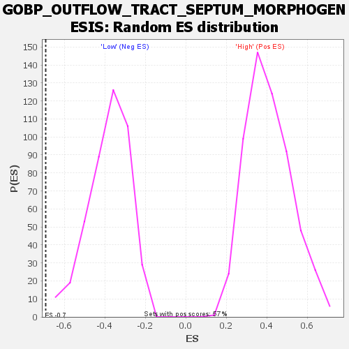

Profile of the Running ES Score & Positions of GeneSet Members on the Rank Ordered List
| Dataset | WG6v3.CYGB.cls#High_versus_Low.CYGB.cls#High_versus_Low_repos |
| Phenotype | CYGB.cls#High_versus_Low_repos |
| Upregulated in class | Low |
| GeneSet | GOBP_OUTFLOW_TRACT_SEPTUM_MORPHOGENESIS |
| Enrichment Score (ES) | -0.69231457 |
| Normalized Enrichment Score (NES) | -1.8204501 |
| Nominal p-value | 0.0 |
| FDR q-value | 0.13558146 |
| FWER p-Value | 0.756 |
| SYMBOL | TITLE | RANK IN GENE LIST | RANK METRIC SCORE | RUNNING ES | CORE ENRICHMENT | |
|---|---|---|---|---|---|---|
| 1 | TGFB2 | TGFB2 | 520 | 0.154 | 0.0597 | No |
| 2 | NRP1 | NRP1 | 1625 | 0.071 | 0.0424 | No |
| 3 | NRP2 | NRP2 | 1891 | 0.062 | 0.0635 | No |
| 4 | TGFBR2 | TGFBR2 | 2082 | 0.056 | 0.0853 | No |
| 5 | BMPR2 | BMPR2 | 2802 | 0.040 | 0.0706 | No |
| 6 | PARVA | PARVA | 4654 | 0.018 | -0.0149 | No |
| 7 | TBX20 | TBX20 | 5016 | 0.015 | -0.0251 | No |
| 8 | ROBO2 | ROBO2 | 7713 | 0.003 | -0.1626 | No |
| 9 | ENG | ENG | 7873 | 0.002 | -0.1696 | No |
| 10 | SMAD4 | SMAD4 | 8838 | -0.001 | -0.2187 | No |
| 11 | BMPR1A | BMPR1A | 8947 | -0.001 | -0.2236 | No |
| 12 | NKX2-5 | NKX2-5 | 9444 | -0.003 | -0.2475 | No |
| 13 | GATA6 | GATA6 | 9777 | -0.004 | -0.2624 | No |
| 14 | ACVR1 | ACVR1 | 10823 | -0.008 | -0.3120 | No |
| 15 | FGF8 | FGF8 | 12073 | -0.013 | -0.3694 | No |
| 16 | TBX1 | TBX1 | 12666 | -0.015 | -0.3913 | No |
| 17 | ROBO1 | ROBO1 | 13600 | -0.020 | -0.4280 | No |
| 18 | SEMA3C | SEMA3C | 14051 | -0.023 | -0.4381 | No |
| 19 | ZFPM2 | ZFPM2 | 18984 | -0.129 | -0.6200 | Yes |
| 20 | SMAD6 | SMAD6 | 18999 | -0.131 | -0.5471 | Yes |
| 21 | MSX2 | MSX2 | 19128 | -0.151 | -0.4690 | Yes |
| 22 | BMP4 | BMP4 | 19200 | -0.165 | -0.3803 | Yes |
| 23 | TBX2 | TBX2 | 19300 | -0.202 | -0.2723 | Yes |
| 24 | LRP2 | LRP2 | 19337 | -0.215 | -0.1537 | Yes |
| 25 | ISL1 | ISL1 | 19403 | -0.282 | 0.0010 | Yes |

